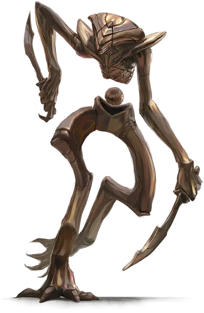

Рилмани куприлах
Cuprilach Rilmani
Средний Небожитель, нейтральный

Класс Доспеха 16 (природный доспех)
Хиты 202 (27к8 + 81)
Скорость 40 футов
| мод | спас | ||
|---|---|---|---|
| СИЛ | 12 | +1 | +1 |
| ЛОВ | 20 | +5 | +9 |
| ТЕЛ | 16 | +3 | +3 |
| мод | спас | ||
|---|---|---|---|
| ИНТ | 16 | +3 | +3 |
| МДР | 15 | +2 | +2 |
| ХАР | 14 | +2 | +6 |
Навыки Восприятие +6, Скрытность +13
Сопротивление урону психическая энергия
Чувства истинное зрение 120 футов, пассивное Восприятие 16
Языки любые четыре языка, Телепатия 120 фт.
Опасность 12 (8400 опыта)
Бонус мастерства +4
Действия
Мультиатака. Куприлах совершает три атаки Отполированным клинком или Снарядом.
Отполированный клинок. Рукопашная атака оружием: +9 к попаданию, досягаемость 5 футов, одна цель. Попадание: 8 (1к6 + 5) колющего урона плюс 13 (2к12) урона психической энергией.
Снаряд. . Дальнобойная атака заклинанием: +9 к попаданию, дистанция 20/60 футов, одна цель. Попадание: 7 (1к4 + 5) колющего урона плюс 13 (2к12) урона психической энергией.
Использование заклинаний. Куприлах накладывает одно из следующих заклинаний, не нуждаясь в материальных компонентах, используя Интеллект в качестве базовой характеристики (Сл спасброска заклинания 15):
• Неограниченно: обнаружение магии [detect magic], маскировка [disguise self]
• 1/день каждое: смена обличья [alter self], туманное облако [fog cloud], тишина [silence]
Бонусные действия
Ловкость убийцы. Куприлах может совершить действие Рывок или Отход, или совершить одну атаку Отполированным клинком.
Реакции
Невероятное уклонение. Куприлах уменьшает вдвое урон от попавшей по нему атаки. Он должен видеть нападавшего.
Описание
Куприлахи проникают в места силы по всей мультивселенной, выступая в качестве шпионов и убийц. Они наносят удары с хирургической точностью, следуя приказам аурумахов без вопросов и эмоций.
Куприлахи имеют жёсткую медную оправу, с торсами, парящими над их талией, разделенные парящей полированной сферой. Ловкие и вооруженные арсеналом магии обмана, куприлахи делают все необходимое для выполнения своих миссий.
Рилмани
Рилмани охраняют баланс между силами и философиями мультивселенной. Они стремятся поддерживать планарное равновесие, гарантируя, что добро, зло, закон или хаос никогда не станут слишком могущественными или слишком слабыми. Для рилмани каждая из этих сил является фундаментальной для существования мультивселенной. Всякий раз, когда кто-то угрожает склонить чашу весов в свою пользу или план находится на грани разрушения, рилмани действуют, чтобы уравнять шансы.
В то время как рилмани можно встретить где угодно, чаще всего их можно встретить на их родном плане, во Внешних землях, где они работают над тем, чтобы ни одна сила не оказывала чрезмерного воздействия на Согласованные владения.
Рилмани прямоходящие двуногие, с телами из живого металла, который по внешнему виду варьируется от холодного железа до блестящего золота. У большинства из них гладкие лица с немногочисленными особенностями, а их необычная анатомия часто действует вопреки силам природы.